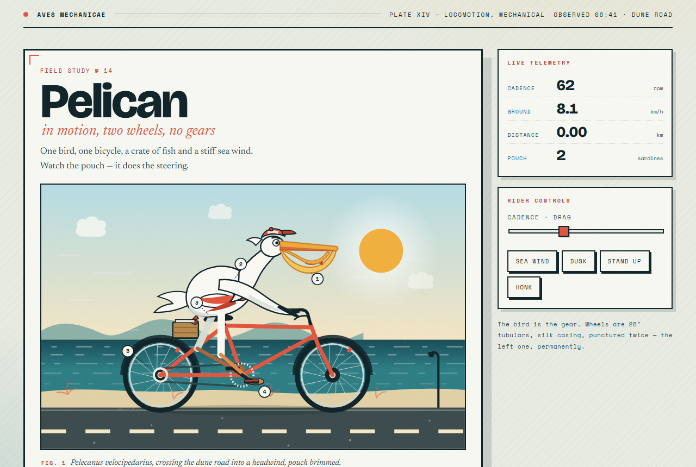

движок · 2×RTX 2080 Ti · NVFP4 + Q8 · 524K
Движок для запуска Qwen3.8-Flash-Next (125 млрд параметров, смесь экспертов) и дообученных моделей того же устройства, например Swift 1.5, на обычном железе: одна-две игровые карты NVIDIA и оперативная память ПК. В комплекте установщик, сервер с API, совместимым с OpenAI и Anthropic, и веб-чат.
ответ на коде, две RTX 2080 Ti, модель Q8_0, ключ --pcie-frac 0
чтение промта в 39 056 токенов, NVFP4 + Q8, две карты
окно контекста; зрение и живой монитор в веб-чате
видеопамяти до кэша экспертов на NVFP4 + Q8; IQ3_XXS — от 5,43 ГиБ
Живые прогоны на нашем стенде: файл каждого ответа можно открыть и скачать, рядом снимок и цифры. Новые тесты добавляются сюда.

Температура: пеликан на велосипеде Один промт при каждой температуре от 0.1 до 1.5 с шагом 0.1: что рисует модель, сколько думает, сколько пишет. температура 0.1–1.5, шаг 0.1 · Swift 1.5 NVFP4 + Q8 · 15.10.2026Установщик спросит модель, её размер, контекст и картинки, скачает движок из релиза и модели с Hugging Face и запустит сервер.
git clone https://github.com/tirex999/DACAN
Заранее нужен только драйвер NVIDIA; Python и библиотеки CUDA установщик поставит сам.
git clone https://github.com/tirex999/DACAN cd DACAN ./setup.sh
UPDATE.bat (Windows) или ./update.sh (Linux): свежие файлы, новый движок, если вышел, и настройки моделей. Модели заново не скачиваются.
Наши кванты на Hugging Face. Кванты GSQ-RCO (2–3.5 бита) от ISTA-DASLab и UkisAI ставит установщик.
Подробности в репозитории (на английском), вопросы — в issues.